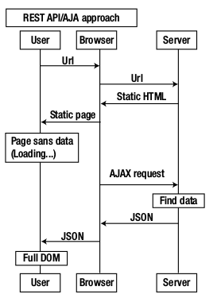
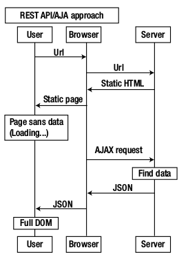

EXPRESS 4.20.X
USO
instalacion
npm install -g express - Lo instalamos globalmente
npm install -g express-generator - Y el generador de codigo plantilla que nos permite usar el comando express
-
A pelo
npm init- te pregunta muchas cosas para generar elpackage.json -
Con plantillas
express -hMuestra las opciones
express --hbs miAppCrea el proyecto miApp con handlebars pej
cd miApp & npm installInstala las dependencias


api
application appEs una instancia de la aplicacion express que se usa normalmente para configurar la aplicacionrequest reqEs una envoltura del objeto request del modulo HTTP usado para extraer informacion sobre la peticionresponse resEs una envoltura del objeto response del modulo HTTP usado para enviar los datos y cabeceras de la respuesta
Application settings:
- env: production, development ...
- viewcache
- view engine: jade, ejs, hbs ...
- views
- trustproxy (NGINX)

Seguimiento de una peticion en express

MAIN FILE
app.js o main.js Cosas que se hacen en este fichero:
Dependencias- Incluir paquetes de terceros y modulos nuestros como manejadores, utilidades ayudantes y modelosInstanciaciones- configurar las opciones de express como motor de plantillasConfiguraciones- ajustes y como conectar las bases de datosMiddlewares- Definir middlewaresRuteo- definir rutasArranque- iniciar la app o exportarla app como un modulo
ajustes
app.set(nombre, valor) - para definir un valor
app.set('port', process.env.PORT || 3000);
app.get(nombre) - para conseguir un valor
app.enable() -
app.disable() -
app.enabled() -
app.disabled() -
env - almacena el modo de entorno actual para ese proceso de node.js. Se toma
de process.env.NODE_ENV o se pone development por defecto. Opciones
{development, test, stage, preview, production}
view cache - ponerlo a true para produccion
view engine - view engine
views - la ruta absoluta al directorio con las plantillas
app.set('views', path.join(__dirname, 'templates'))
trust proxy - ponerlo a true se esta detras de un proxy como nginx. Por
defecto esta desactivado, para activarlo
app.set('trust proxy', true);
app.enable('trust proxy');
jsonp callback name - vale para hacer llamadas ajax desde otros dominios
usando CORS
app.set('jsonp callback name', 'cb');
json replacer - json spaces - son dos parametros que se aplican a todas las
funciones JSON.stringify().
replacer es un filtro
spaces es valor de indentacion
app.set('json replacer', function(key, value){
if (key === 'discount')
return undefined;
else
return value;
});
app.set('json spaces', 4);
case sensitive routing - por defecto disabled, asi /nombre y /Nombres es la
misma ruta
strict routing - por defeto disabled, asi /users y /users/ son la misma ruta
x-powered-by - establece la opcion de la respuesta x-powered-by con el
valor Express. Por seguridad lo mejor es desactivarla
app.set('x-powered-by', false) // o
app.disable('x-powered-by')
etag - dejarlo como esta es lo mejor
query parser - para parsear las query-string enviadas en la URL. Por defecto
extended (usa el modulo qs), true (qs), false (lo desactiva), simple (usa el
modulo del nucleo querystring)
app.set('query parser', 'simple');
app.set('query parser', false);
app.set('query parser', customQueryParsingFunction);
subdomain offset - Para aplicaciones desplegadas en varios subdominios
contenido estatico
- Usar directorio de contenido estatico
Para servir contenido estatico se usa el middleware express.static incorporado
en express.
var publicPath = path.resolve(__dirname, 'public');
app.use(express.static(publicPath));
Ya puedes cargar archivos del directorio public
El nombre del directorio public no es parte de la url
http://localhost:3000/css/style.css
http://localhost:3000/public/css/style.css NO
- Usar multiples directorios de contenido estatico
Express busca los archivos en el orden en el que se declaran los directorios estaticos
app.use(express.static('public'));
app.use(express.static('files'));
- Prefijo de ruta virtual
app.use('/static', express.static('public'));
Ahora para cargar los archivos :
http://localhost:3000/static/css/style.css
TEMPLATES
REQUEST (Peticion)
req.query - Esta propiedad es un objeto que tiene una propiedad para cada query string en la ruta. Si no hay query string es un objeto vacio {}.
// GET /search?q=jolav
req.query.q // => "jolav"
// GET /shoes?order=desc&shoe[color]=blue&shoe[type]=converse
req.query.order // => "desc"
req.query.shoe.color // => "blue"
req.query.shoe.type // => "converse"
req.params - Esta propiedad es un objeto con propiedades mapeadas a la ruta "parametros".
Ejemmplo una ruta /usuario/:nombre, la propiedad 'nombre'
esta disponoble en req.params.nombre. Por defecto el objeto es {}
// GET /user/jolav on route /user/:name
req.params.name // => "jolav"
// GET /file/js/react.js on royte /file/*
req.params[0]
// => "js/react.js"
req.body - Contiene pares clave-valor de datos enviados en el body de la peticion. Por defecto es undefined y se llena cuando usas un middleware body-parsing como por ejemplo body-parser o multer
req.route - Contiene la ruta actual como una string
app.get('/user/:id?', function userIdHandler(req, res) {
console.log(req.route);
res.send('GET');
});
{ path: '/user/:id?',
stack:
[ { handle: [Function: userIdHandler],
name: 'userIdHandler',
params: undefined,
path: undefined,
keys: [],
regexp: /^\/?$/i,
method: 'get' } ],
methods: { get: true } }
req.cookies - Al usar middleware cookie-parser esta propiedad es un objeto que contiene las cookies enviadas con la peticion. Si no hay cookies por defecto es {}
req.headers -
req.xhr - Es una propiedad booleana que es true si el campo de la cabecera X-Requested-With header de la peticion es “XMLHttpRequest”
req.hostname - Contiene el hostname sacado de la cabecera Host HTTP Header de la peticion. Vamos, de que pagina web viene la peticion
// Host: "example.com:3000"
req.hostname
// => "example.com"
req.originalUrl - req.path - req.baseUrl -
// GET /search?q=something
req.originalUrl // => "/search?q=something"
// example.com/users?sort=desc
req.path // => "/users"
// GET 'http://www.example.com/admin/new'
app.use('/admin', function(req, res, next) {
console.log(req.originalUrl); // '/admin/new'
console.log(req.baseUrl); // '/admin'
console.log(req.path); // '/new'
next();
});
req.protocol - Contiene el protocolo de la peticion como string (http o https)
RESPONSE (Respuesta)
res.headersSent - Propiedad booleana que indica si la aplicacion ya ha enviado cabeceras http para la respuesta (vamos, si ya ha enviado alguna respuesta)
app.get('/', function (req, res) {
console.log(res.headersSent); // false
res.send('OK');
console.log(res.headersSent); // true
});
res.cookie(name, value [, options]) - Establece el nombre de la cookie a value (que puede ser una string o un objeto convertido en JSON). Las options es un objeto que puede tener las siguientes propiedades (domain, encode, expires, httpOnly, maxAge, path, secure, signed ,sameSite)
res.download(path [, filename] [, options] [, fn]) - Transfiere el archivo en la ruta (path) como un adjunto. Lo normal es que el navegador del cliente pregunte para permitir la descarga
res.download('/report-12345.pdf', 'report.pdf', function(err){
if (err) {
// Handle error, response may be partially-sent, check res.headersSent
} else {
// decrement a download credit, etc.
}
});
res.end([data] [, encoding]) - Finaliza el proceso de respuesta. Se usa para terminar la respuesta sin enviar ningun dato. Si necesitas respondee con datos usas metodos como res.send() o res.json()
res.render(view, [locals], callback) - Renderiza una vista y envia el HTML renderizado como string al cliente
res.set(field, [value]) - Determina el valor de la cabecera de respuesta http de nombre field a value. Para establecer multiples campos a la vez pasa un objeto como parametro
res.set('Content-Type', 'text/plain');
res.set({
'Content-Type': 'text/plain',
'Content-Length': '123',
'ETag': '12345'
});
res.setHeader('Content-Type', 'application/json');
// res.header() is an alias of res.set() method from Express framework.
// The only difference is res.setHeader() allows you only to set a
// singular header and res.header() will allow you to set multiple headers
// res.setHeader() is a native method of Node.js
res.status(code) - Establece el estatus HTTP para la respuesta. Se puede encadenar
res.status(200).send(JSON.stringify(data, null, 3));
// same as
res.status(200).json(data);
res.send([status], body) - Envia la respuesta HTTP. El parametro del body puede ser una objeto Buffer, una cadena, un objeto o un array
res.send(new Buffer('whoop'));
res.send({ some: 'json' });
res.send('<p>some html</p>');
res.status(404).send('Sorry, we cannot find that!');
res.status(500).send({ error: 'something blew up' });
res.sendFile(path [, options] [, fn]) - Envia el fichero que se encuentra el la ruta dada (path). Establece la cabecera de respuesta HTTP Content-Type segun la extension del archivo enviado. Salvo que la option root este especificada es el objeto de opciones el path debe ser ruta absoluta al archivo
app.get('/file/:name', function (req, res, next) {
const options = {
root: __dirname + '/public/',
dotfiles: 'deny',
headers: {
'x-timestamp': Date.now(),
'x-sent': true
}
};
const fileName = req.params.name;
res.sendFile(fileName, options, function (err) {
if (err) {
next(err);
} else {
console.log('Sent:', fileName);
}
});
})
res.json([status], json) - Envia una respuesta JSON ( con el apropiado content-type) que es el parametro convertido a JSON usando JSON.stringify()
res.jsonp([status], jsonp) - Envia una respuesta JSON con soporte para JSONP. Este metodo es identico a res.json() salvo que añade soporte para el callback de JSONP
res.redirect([status], path) - Redirige a la URL marcada en path con un HTTP status code igual a status, que si no se especifica por defecto es "302"
res.location(path) - Establece la cabecera HTTP header Location a path
res.redirect('/foo/bar');
res.redirect('http://example.com');
res.redirect(301, 'http://example.com');
res.redirect('../login');
MIDDLEWARE
https://expressjs.com/en/resources/middleware.html
Definicion
- Se usan para gestionar las peticiones HTTP hechas al servidor, manejarlas y responderlas.
- Son callbacks que se ejecutan cuando ocurre una peticion HTTP.
- La mayoria son de diseño propio para cubrir nuestras necesidades pero tambien los hay para cosas comunes como logueos, servir ficheros estaticos, parseos y muchas mas cosas.
orden- Los middlewares se ejecutan en el mismo orden en el que se cargan
Que puede hacer un middleware
- ejecutar codigo
- hacer cambios en los objetos request y response
- terminar el ciclo request-response
- llamar al siguiente middleware
Si el middleware en curso no termina el ciclo request-response debe llamar a
next() para pasar el control al siguiente middleware o la peticion se quedara
colgada.
Cada funcion middleware tiene tres argumentos:
req: objeto que contiene toda la informacion de la peticion HTTPres: objeto que contiene toda la informacion de la respuesta HTTPnext: es el siguiente middleware definido en el orden de middlewares
Crear un middleware
var express = require('express');
var app = express();
// Lo definimos
var myLogger = function (req, res, next) {
console.log('LOGGED');
next();
};
// Lo cargamos en la app antes de definir las rutas o nunca se ejecutara
app.use(myLogger);
app.get('/', function (req, res) {
res.send('Hello World!');
});
app.listen(3000);
Otro ejemplo middleware pero este manipula la peticion
var express = require('express');
var app = express();
// Lo definimos
var requestTime = function (req, res, next) {
req.requestTime = Date.now();
next();
};
// Lo cargamos en la app antes de definir las rutas o nunca se ejecutara
app.use(requestTime);
app.get('/', function (req, res) {
var responseText = 'Hello World!<br>';
responseText += '<small>Requested at: ' + req.requestTime + '</small>';
res.send(responseText);
});
app.listen(3000);
Limitar un middleware a una cierta rutas
app.use(/ruta, middlewareParaEsaRuta);
Para cada ciclo request-response de una aplicacion Express
- Se ejecutan los middlewares de arriba a abajo
- Para no terminar el ciclo un middleware debe pasar el control al siguiente mediante un next();
- next('route'); se salta el resto de middlewares del stack de rutas
- Para terminar un ciclo debemos usar
res.endo usarres.send() ó res.sendFile()que internamente llaman ares.end
Tipos
- A nivel de aplicacion
const app = express();
app.use()
app.METHOD() [METHOD = GET, PUT, POST, UPDATE ...]
- A nivel de router
const router = express.Router();
router.use()
router.METHOD() [METHOD = GET, PUT, POST, UPDATE ...]
- Manejo de error Tienen un argumento mas (err)
app.use(function(err, req, res, next) {
console.error(err.stack);
res.status(500).send('Error : something broke!');
});
- Incorporados de serie
express.static - sirve recursos estaticos como archivos html, imagenes y cosas asi.
express.json``- parsea peticiones entrantes con JSON .express.urlencoded` - parsea peticiones entrantes con URLEncoded
- Terceros
npm install middleware;
const middleware = require('middleware');
app.use(middleware());
Esenciales
compression- gzips los datos transferidos. Debe ponerse my arriba para que comprima los datos de otros middlewares y rutas
npm install compression
var compression = require('compression');
app.use(compression());
express-static
morgan- antiguo logger. Lleva registro de todas las peticiones y otra informacion importante
npm install morgan
var logger = require('morgan');
app.use(logger("common | dev | short | tiny | y mas")); // usar dev
cors- soporte cors para express
cors = require('cors');
app.use(cors());
Si no usamos el middleware poner antes de las rutas este codigo para añadir las cabeceras
app.use(function(req, res, next) {
res.header("Access-Control-Allow-Origin", "*");
res.header("Access-Control-Allow-Headers",
"Origin, X-Requested-With Content-Type, Accept");
next();
});
helmet- middlewares de seguridad
var helmet = require('helmet');
app.use(helmet());
body-parser- permite procesar los datos que vienen y convertirlos en objetos javascript/node usables.
npm install body-parser
var bodyParser = require('body-parser');
app.use(bodyParser.json());
app.use(bodyParser.urlencoded({ extended: false }));
errorhandler- se usa para manejo basico de errores en desarrollo y prototipado
npm install errorhandler
var errorHandler = require('errorhandler');
if (app.get('env') === 'development') {
app.use(errorhandler());
}
connect-busboy- para usar el parseador de formulariosbusboy
npm install connect-busboy
var busboy = require('connect-busboy');
app.use('/upload', busboy({immediate: true }));
cookie-parser- permite acceder los valores de las cookies del usuario del objetoreq.cookie
npm install cookie-parser
var cookieParser = require('cookie-parser');
app.use(cookieParser());
method-override- permite al servidor soportar metodos http que el cliente no soporte.
npm install method-override
var methodOverride = require('method-override');
app.use(methodOverride("loQueToque"));
serve-index- como unlsen la terminal
npm install serve-index
var serveIndex = require('serve-index');
app.use('/shared', serveIndex(
path.join('public','shared'),
{'icons': true}
));
express-session- permite al servidor usar sesiones web. Necesita tener activo antes a cookie-parser.
npm install express-session
response-time- añade la cabecera "X-Response-Time" con un tiempo en ms con un numero de 3 digitos por defecto desde el momento en el que la peticion entro en este middleware.
npm install response-time
var responseTime = require('response-time');
app.use(responseTime(4)); // cambio a 4 digitos
csurf- para prevenir CSRF
npm install csurf
var csrf = require('csurf');
app.use(csrf());
serve-favicon- para configurar el favicon que querramos
npm install serve-favicon
var favicon = require('serve-favicon');
app.use(favicon(path.join(__dirname, 'public', 'favicon.ico')));
app.use(favicon(path.join(__dirname + '/public', 'favicon.ico')));
passportyexpress-session- autenticacion
var passport = require('passport');
var session = require('express-session');
// required for passport
app.use(session({ secret: 'kk', saveUninitialized: true, resave: true}));
app.use(passport.initialize());
app.use(passport.session()); // persistent login sessions
vhost- para usar diferentes rutas basadas en dominios. Por ejemplo tenemos dos apps con express (api y web) para organizar el codigo para diferentes rutas basadas en los dominios api.dominio.com y web.dominio.com
npm install vhost
var api = express()
var web = express()
app.use(vhost('www.dominio.com', web))
app.use(vhost('api.dominio.com', api))
connect-timeout- establece un temporizador
npm install connect-timeout
var timeout = require('connect-timeout');
cookie-session- almacen de sesion de cookiesraw-body- para peticiones como buffersexpress-validator- para sanear y validar datos que se recibenoauth2-server- autenticacionconnect-redis- almacen de la sesion en redis
SESIONES + COOKIES
Actualizacion 04-07-2019 Ya no hacen falta ni cookie-parser, ni body-parser
OJO con los dominios desarrollando en local, si expressjs se levanta en localhost, poner el navegador tambien en localhost y no con 127.0.0.1 o las cookies no se podran leer (aunque si funcionan)
app.use(express.json()); // to support JSON-encoded bodies
app.use(express.urlencoded({ // to support URL-encoded bodies
extended: true
}));
app.set('trust proxy', 1); // trust first proxy
app.use(session({
secret: "process.env.secretSession",
name: 'alpha',
saveUninitialized: false,
resave: false,
cookie: {
httpOnly: false, // true to production
//secure: true // comment for localhost, only works for https
secure: false,
path: "/"
},
}));
ROUTING
El ruteo determina como responde una aplicacion a una peticion de un cliente que
contiene una URI (o ruta) y un metodo HTTP (GET, POST ...)
Cada ruta puede tener una o mas funciones manejadoras que se ejecutan cuando la
ruta coincide.
Las rutas se pueden hacer con expresiones regulares
protocolo hostname port path querystring fragment
http:// localhost :3000 /about ?test=1 #history
http:// www.bing.com /search ?q=grunt&first
https:// google.com / #q=express
app.METHOD
app.METHOD(path, [handler], handler);
pathes la ruta en el servidor que pueden ser cadenas, patrones de cadenas o expresiones regulareshandleres la funcion que se ejecuta cuando la ruta coincide. Cuando hay varios manejadores para evitar que se ejecuten todos hay que invocar next('route') y saltara a la siguienteMETHOD- get, leer
- post, crear
- put, actualizar
- delete, borrar
- hay otros cuantos
- all, para todos
// Ejemplos
app.get('/', function (req, res) { // GET method route
res.send('GET request to the homepage');
});
app.post('/', function (req, res) { // POST method route
res.send('POST request to the homepage');
});
- parametros en la ruta
La ruta puede contener parametros que se capturan en req.params
Route path: /users/:userId/books/:bookId
Request URL: http://localhost:3000/users/34/books/8989
req.params: { "userId": "34", "bookId": "8989" }
- multiples manejadores de ruta
Se puede establecer múltiples callbacks (manejadores) que se comportan como middlewares para gestionar una petición.
La unica excepcion es que podrian invocar next("route") para evitar los
restantes manejadores de esa ruta
Los manejadores de ruta pueden ser una funcion, un array de funciones o una
combinacion de ambos
// varias funciones independientes
app.get('/example/b', function (req, res, next) {
console.log('the response will be sent by the next function ...');
next();
}, function (req, res) {
res.send('Hello from B!');
});
// array de funciones
var cb0 = function (req, res, next) {
console.log('CB0');
next();
}
var cb1 = function (req, res, next) {
console.log('CB1');
next();
}
var cb2 = function (req, res) {
res.send('Hello from C!');
}
app.get('/example/c', [cb0, cb1, cb2]);
// mix de funciones independientes y array de funciones
var cb0 = function (req, res, next) {
console.log('CB0');
next();
}
var cb1 = function (req, res, next) {
console.log('CB1');
next();
}
app.get('/example/d', [cb0, cb1], function (req, res, next) {
console.log('the response will be sent by the next function ...');
next();
}, function (req, res) {
res.send('Hello from D!');
});
app.route()
cadena de manejadores de ruta
app.route('/book')
.get(function(req, res) {
res.send('Get a random book');
})
.post(function(req, res) {
res.send('Add a book');
})
.put(function(req, res) {
res.send('Update the book');
});
clase express.Router
La clase express.Router se usa para crear manejadores modulares
Creamos un archivo perfil.js en el subdirectorio para rutas /routes
var express = require('express');
var perfil = express.Router();
// middleware especifico para esta ruta si nos hace falta, es opcional
perfil.use (function(req, res, next) {
console.log('Hora = ', Date.now());
next();
});
perfil.get("/", function(req, res, next) {
res.send("En ruta /");
});
perfil.get("/username", function(req, res, next) {
res.send("En /username");
});
module.exports = perfil;
Cargamos el modulo de router en la aplicacion en app.js
// en app.js con esto creamos dos rutas "/profile" y "/profile/:username"
var perfiles = require('./routes/perfil.js');
app.use('/perfiles', perfiles);
Ahora la app ya atiende a las rutas /perfil y /perfil/:username
Cada router puede cargar otros router hasta cargar todos en pej index.js y al cargar en app,js /controller/index.js ya estaran todas las rutas
ERRORES
El middleware de manejo de errores se define el ultimo despues de todos los app.use() y manejo de rutas.
- En desarrollo
if (app.get('env') === 'development') {
app.use(function(err, req, res, next) {
res.status(err.status || 500);
res.render('error', {
message: err.message,
error: err
});
});
}
- En produccion
app.use(function(err, req, res, next) {
res.status(err.status || 500);
res.render('error', {
message: err.message,
error: {}
});
});

Se produce un error en express cuando llamamos un next("algo ha pasado")
Se saltara los middleware que haya hasta llegar al primer middleware que maneje errores
Express no maneja errores producidos por la palabra clave throw y tiene
protecciones para estas excepciones. La app retirnara un error 500 y esa peticion
fallara pero la app continuara ejecutandose. Sin embargo los errores de sintaxis
cascan el programa
app.use(function(req, res, next) {
if (req.url === "/") {
next();
} else if (req.url === "/throw") {
throw new Error("Gimme that error");
} else {
next("You didn't visit the root!");
}
});
app.use(function(req, res) {
res.send("Welcome to the homepage.");
});
app.use(function(err, req, res, next) {
console.error(err);
res.status(500);
next(err);
});
app.use(function(err, req, res, next) {
res.send("Got an error: " + err);
});
APIs
 

- CRUD api
crear -> POST
leer -> GET
actualizar -> PUT
borrar -> DELETE
- Versiones
Patron para mantener la retrocompatibilidad
api1.js
var express = require("express");
var api = express.Router();
api.get("/timezone", function(req, res) {
res.send("Sample response for /timezone");
});
api.get("/all_timezones", function(req, res) {
res.send("Sample response for /all_timezones");
});
module.exports = api;
api2.js
var express = require("express");
var api = express.Router();
api.get("/timezone", function(req, res) {
res.send("API 2: super cool new response for /timezone");
});
module.exports = api;
app.js
var express = require("express");
var apiVersion1 = require("./api1.js");
var apiVersion2 = require("./api2.js");
var app = express();
app.use("/v1", apiVersion1);
app.use("/v2", apiVersion2);
app.listen(3000, function() {
console.log("App started on port 3000");
});
SEGURIDAD
- Cross-site request forgery
npm install --save csurf - Se evita al usar el middleware csurf
Debe ir precedido por cookie-parser y express-session
var cookieParser = require('cookie-parser'),
var session = require('express-session');
var csrf = require("csurf");
app.use(cookieParser('FE28D342-4040-4D0E-B080-B85E85DAF7FD'));
app.use(session({
secret: 'BD564488-5105-4202-8927-5A5C9AE9154E',
resave: true,
saveUninitialized: true
}));
app.use(csrf());
app.use(function (request, response, next) {
response.locals.csrftoken = request.csrfToken();
next();
});
- Permisos en procesos
No correr servicios como root.
Los servicios se pueden cambiar de usuario en ejecucion usando GID (group ID) y
UID (user ID)
var app = express();
http.createServer(app).listen(app.get('port'), function(){
console.log("Express server listening on port " + app.get('port'));
process.setgid(parseInt(process.env.GID, 10));
process.setuid(parseInt(process.env.UID, 10));
});
- HTTP Security Headess
Instalar middleware helmet que es un conjunto de middlewares de seguridad
npm install --save helmet
var helmet = require('helmet');
app.use(helmet());
-
Input Validation
- Chequear manualmente los datos con expresiones regulares de las rutas que aceptan datos externos
- Deben tambien controlarse el mapeo de objetos de los datos
- La validacion en el navegador es solo por criterios de usabilidad, no aporta proteccion a la aplicacion web
npm install --save express-validator
var validator = require('express-validator');
// lo aplico despues del body-parser
app.use(bodyParser.json());
app.use(bodyParser.urlencoded({extended: true}));
app.use(validator());
Ahora en los manejadores tenemos acceso a req.assert y req.validationErrors()
app.post('/login', function(req, res){
req.assert('password', 'Password is required').notEmpty();
req.assert('email', 'A valid email is required').notEmpty().isEmail();
var errors = req.validationErrors();
if (errors) {
res.render('index', {errors: errors});
} else {
res.render('login', {email: request.email});
}
});
- Seguridad de los paquetes npm
npm install -g nsp
nsp check --output summary
- app.disable('x-powered-by');